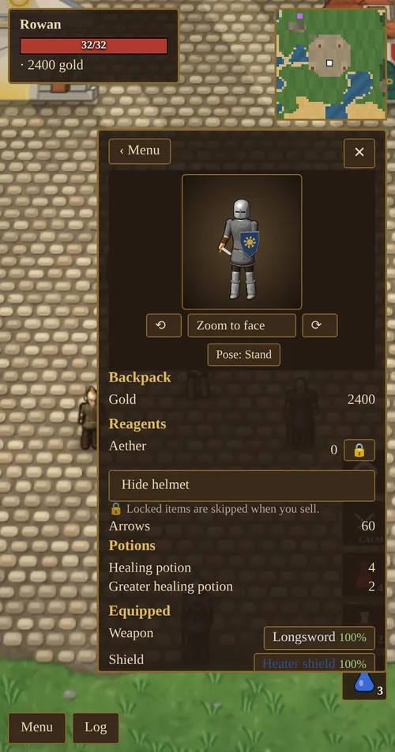
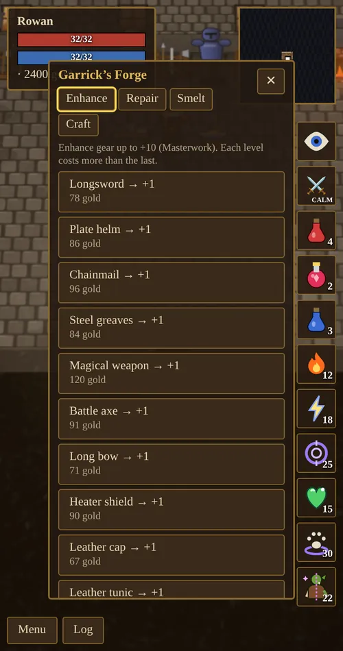
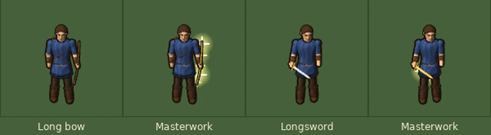

Chapter 4 of 11
Armor & Equipment
What you wear decides how hard you hit and how much you can take. Gear wears out, can be repaired, and can be hammered all the way up to masterwork.
Equipment slots
You have eight slots: weapon, shield, head, body, feet, two rings and a necklace. Open Menu → Backpack → Gear to equip gear: tap an item in your pack to wear it, and tap a worn item to take it off.
- Bows need both hands. Equipping a bow moves your shield into your pack.
- Armor needs Strength. The requirement is the piece’s armor value × 5.5, so Plate Armor (5) needs 28 Strength.
- Tap the lock beside an item to protect it from Sell all loot.
- The backpack has a button to hide your helmet if you prefer to see your hair.

Weapons
Melee damage is 2–6, plus your weapon’s bonus, plus 1 per 25 Swordsmanship, plus 1 per 12 Strength, multiplied by Tactics (up to +50%) and any damage bonus from gear. A sneak attack doubles it.
| Weapon | Damage bonus | Price | Notes |
|---|---|---|---|
| Dagger | +1 | 40g | What you start with. |
| Longsword | +3 | 150g | The usual first upgrade. |
| Battle axe | +5 | 260g | A heavy, sweeping swing. |
| Katana | +7 | 420g | The best weapon Mara sells. |
| Short bow | +3 | crafted | Range 6. Craft from 4 logs. |
| Long bow | +6 | crafted | Range 8. Craft from 6 logs and 2 rat tails. |
Bows fire arrows, and each shot uses one. Arrows are crafted from logs (see carpentry). Arrow damage is 2–6, plus the bow’s bonus, plus 1 per 20 Archery, with the same Tactics and gear multipliers.
Armor and shields
Armor takes its value off every blow you receive, and half its value off spells. Shields add a chance to parry a blow completely.
| Piece | Slot | Armor | Parry | Strength needed | Price |
|---|---|---|---|---|---|
| Leather cap | Head | 1 | 6 | 60g | |
| Plate helm | Head | 2 | 11 | 220g | |
| Leather tunic | Body | 1 | 6 | 90g | |
| Chainmail | Body | 3 | 17 | 300g | |
| Plate armor | Body | 5 | 28 | 520g | |
| Leather boots | Feet | 1 | 6 | 70g | |
| Steel greaves | Feet | 2 | 11 | 200g | |
| Buckler | Shield | +10% | 120g | ||
| Heater shield | Shield | 1 | +16% | 6 | 250g |
Magic gear
Bosses and dungeon treasure chests can hold named magic items. Each one exists only once in your world. If one is lost for good, it goes back into the world to be found again. Magic gear wears out half as fast as ordinary gear.
| Tier | Items | Found in |
|---|---|---|
| 1 | Frostbrand (cold damage), Warding Cap (+Int), Boots of Swiftness (+Dex), Elven Shortbow | First-tier dungeons |
| 2 | Venomfang Axe, Aegis of Warding, Mithril Hauberk, Helm of Fortitude, Windrunner Longbow | Second-tier dungeons |
| 3 | Dawnbringer (lightning damage), Dragonscale Armor, Drakeheart Shield, Dragonhide Greaves, Dragonbone Bow (fire damage) | Third-tier dungeons |
| World boss | Sunforged Blade, Voidweave Robes | World bosses only |
Identifying
New magic items are unidentified. They show up as “Magical weapon”, “Magical armor” and so on, and you cannot see their bonuses. Tap the magnifying glass beside one to study it with Arms Lore. Identifying always works and raises Arms Lore, more so for rarer items. Everything you identify teaches you a property that you can later enchant onto your own gear.
Rings and necklaces
Jewelry drops from monsters (rarely), bosses and chests. Each piece has one to three bonuses: Strength, Dexterity, Intelligence, a skill, or a percentage damage bonus. Its rarity sets how many bonuses it has and how strong they are.
| Rarity | Name begins | Bonuses | Each bonus up to |
|---|---|---|---|
| Common | (none) | 1 | about 4 |
| Fine | Fine | 2 | about 8 |
| Superb | Superb | 2 | about 13 |
| Legendary | Legendary | 3 | about 19 |
Names describe the main bonus: of Might (Strength), of Agility (Dexterity), of Wisdom (Intelligence), of Fury (damage), or a skill title such as of the Duelist, of the Marksman or of the Archmage. You can also make your own.
Durability and repair
Weapons wear a little with each swing, and armor and shields with each hit you take. Durability shows as a percentage beside the item: green when healthy, orange below 30%, red at 10% or less. You get a warning at 25% and a louder one at 10%.
Worn gear is weaker. An item’s damage, armor and bonuses scale from 100% when new down to 30% at 0 durability.
- Garrick repairs anything to 100% for a fee. The fee is about 18% of the item’s price, scaled by how worn it is. One button on his Repair tab mends everything you are wearing at once.
- Repair it yourself at the forge for free. How far you can restore it depends on your Blacksmithing and Arms Lore: from 30% with no skill, up to 100% with both at 100. Your hammer can slip, which costs 2–8% durability, but a slip never destroys the item.

Tailored clothes and armor
Tamsin’s table turns cloth and leather into caps, hoods, shoes, boots, tunics, a woven robe, ranger boots, a studded leather brigandine and a wizard hat. Cloth pieces can be dyed one of six colors. Some come with bonuses, such as +5 Intelligence and +2 Magery on the woven robe. See Tailoring.
Enhancing and masterwork
Garrick can enhance any weapon, armor or shield, one level at a time, from +1 to +10. Each level costs more than the last, and finer items cost more. If your Blacksmithing and Arms Lore are both 100, you get 40% off.
| Item | Each level adds | At +10 (masterwork) |
|---|---|---|
| Weapons | +1 damage | +2 more damage |
| Armor | +0.5 armor | +2 more armor |
| Shields | +0.4 armor and +1% parry | +2 more armor |
At +10 an item becomes masterwork. Its name gains a ✦, and a masterwork weapon or bow turns gold: the blade or bow glows and small glints of light run along it.

Buying, selling and storage
- Mara sells all ordinary weapons except bows, all ordinary armor, healing and mana potions, and tools. Her shop has Buy and Sell tabs; Buy is split into Armor, Weapons, Tools (pickaxe 45g, fishing pole 60g, shears 30g, tent 150g, bedroll 60g, potions) and Ingredients.
- She buys gear for 25% of its value and potions for 50%.
- She also buys materials: rat tails 2g, logs 2g, orc ears 6g, bones 9g, aether 12g, rubies 60g, sapphires 110g, emeralds 180g and diamonds 400g, plus ore, ingots, hides, wool, cloth, leather and herbs. Each kind can be sold one at a time, as a whole stack, or with everything else in Sell all loot.
- The storage chest beside the fountain holds gear and gold, and anything you carry in a count: materials, reagents, potions, arrows, tools and food, sorted into tabs. Store or take a few at a time or all at once. Stored items cannot be sold by accident or stolen.
| Potion | Effect | Price |
|---|---|---|
| Healing potion | +30 health | 35g |
| Greater healing potion | +70 health | 100g |
| Mana potion | +30 mana | 45g |
| Greater mana potion | +80 mana | 120g |
After a healing potion you must wait 6 seconds before drinking another; after a mana potion, 3 seconds. Mana potions are only sold once you know a spell. Vigor, Haste, Protection, Luck, Fury and explosion potions are not sold: you brew them yourself.